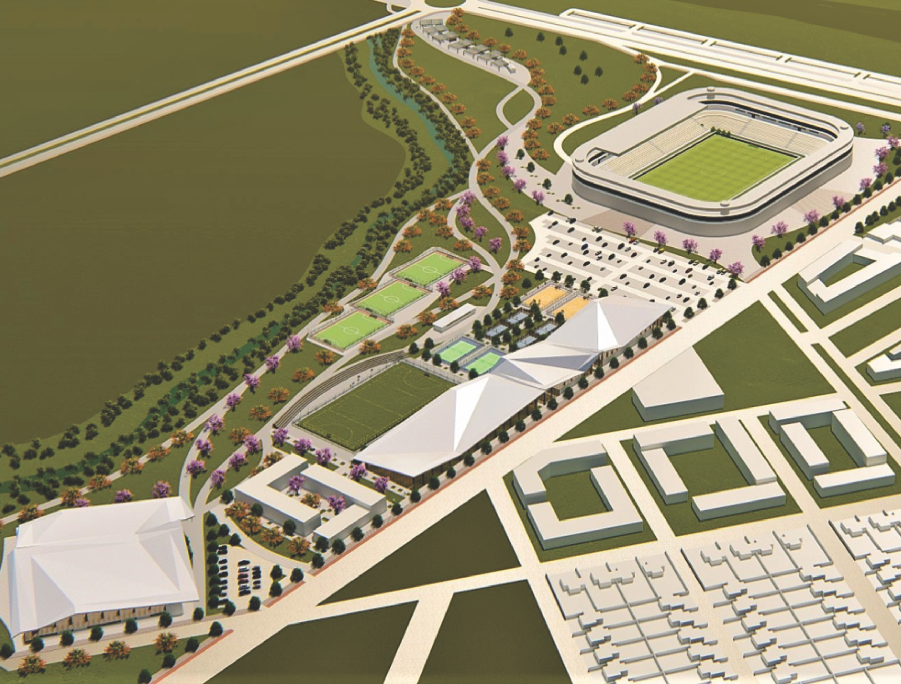
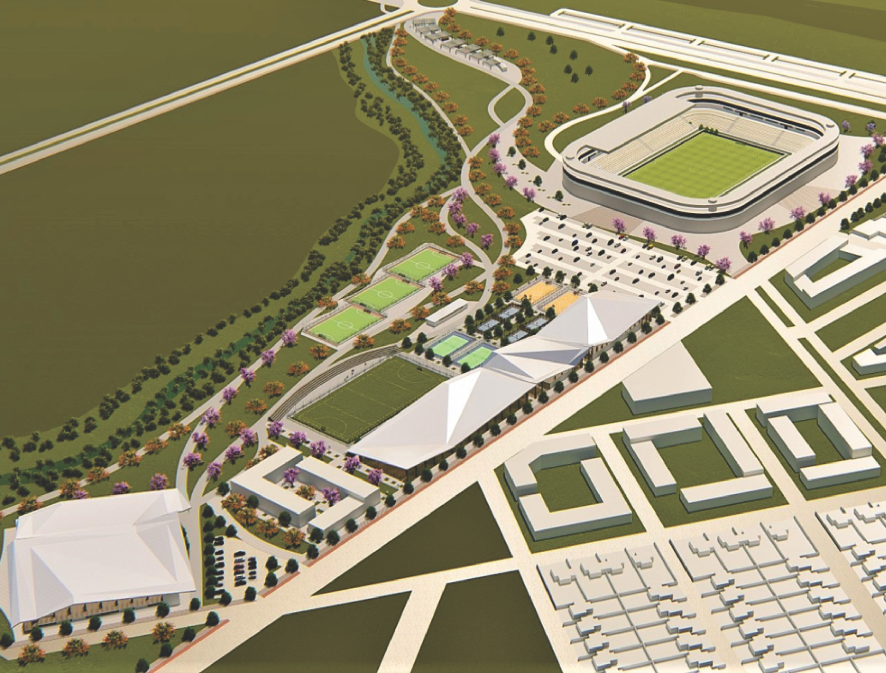

Proyectos
Arquitectura residencial
CASA ATELIER
Este conjunto propone dos viviendas adosadas diseñadas para un pintor
y un escultor, con usos diferenciados y una galería común hacia la
calle que funciona como espacio de exposición y vínculo con el
entorno. La vivienda del pintor se desarrolla en dos niveles,
destacándose una sala taller en el primer piso, abierta, luminosa y
con visuales amplias, que favorece el trabajo con la luz natural y el
paisaje. La vivienda del escultor incorpora un subsuelo como taller,
más introspectivo y contenido, pensado para el trabajo con volumen y
materia, mientras la planta superior resuelve el área habitable con
apertura hacia un espacio verde. Ambas unidades comparten criterios
materiales y formales, pero responden de manera específica a las
necesidades espaciales y expresivas de cada disciplina artística.
Arquitectura urbana
PARQUE DE LA MEMORIA FERROVIARIA
Este proyecto urbano propone la transformación del antiguo predio del
ferrocarril en la provincia de La Rioja Argentina en un nuevo espacio
público, combinando la preservación patrimonial con usos culturales y
recreativos contemporáneos. La intervención incluye la recuperación de
edificios en desuso y la incorporación de una plaza cultural, donde se
reinstalan elementos históricos como la antigua locomotora y la fuente
de agua, resignificándolos como piezas centrales del nuevo paisaje
urbano. A modo de transición con el entorno residencial, se proyecta
un parque de la memoria ferroviaria, un área verde accesible que
articula equipamientos culturales con espacios de esparcimiento. El
conjunto busca reactivar un sector históricamente relegado,
promoviendo el vínculo entre identidad, memoria y vida urbana.
Arquitectura Sustentable
POLO DEPORTIVO CUENCA SECA
Este proyecto plantea la creación del Polo Deportivo y Ambiental “El
Sendero”, un parque sustentable que combina infraestructura deportiva
con integración paisajística y compromiso ambiental. El conjunto
incluye un estadio principal alimentado por energías renovables, como
paneles solares y sistemas alternativos, junto con multicanchas, una
cancha cubierta, vivienda deportiva y un sector educativo que
complementa las actividades físicas con formación y comunidad. El
diseño se estructura orgánicamente siguiendo el cauce natural de un
río, generando recorridos fluidos, espacios verdes y nodos de
encuentro que articulan deporte, naturaleza y educación. La propuesta
busca promover un estilo de vida saludable y consciente, integrando
arquitectura, medio ambiente y desarrollo social en un entorno activo,
inclusivo y de bajo impacto.
 
